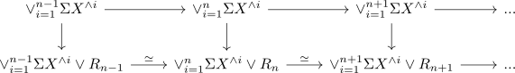

james splitting for a connected pointed anima
Proposition
Let $X \in \mathrm{An}_*$ be a connected pointed anima. Then there exists a canonical equivalence
Proof
Note that by the james splitting
hence we get inductively
then by connectivity of the smash product of anima - since $X$ is at least $0$ connected (and $\Sigma \Omega \Sigma X$ is at least $1$ connected) - we get that $(X^{\wedge n} \wedge \Sigma \Omega \Sigma X)$ is at least roughly $n$ connected. Denote $X^{\wedge n} \wedge \Sigma \Omega \Sigma X = R_n$ as some remainder term. Thus consider the sequential diagrams

Then the colimits of the rows are given by
where the latter follows from infinity colimit of a diagram with only equivalences from a weakly contractible simplicial set
Now all maps above are $n$ connected (after cutting enough of the beginning of the rows, i.e. some cofinal replacement) where we use some kind of n skeleton inclusion as n-1 connected map.
Now we use filtered colimit of n-connected morphisms to conclude that
is arbitrary connected, hence an equivalence